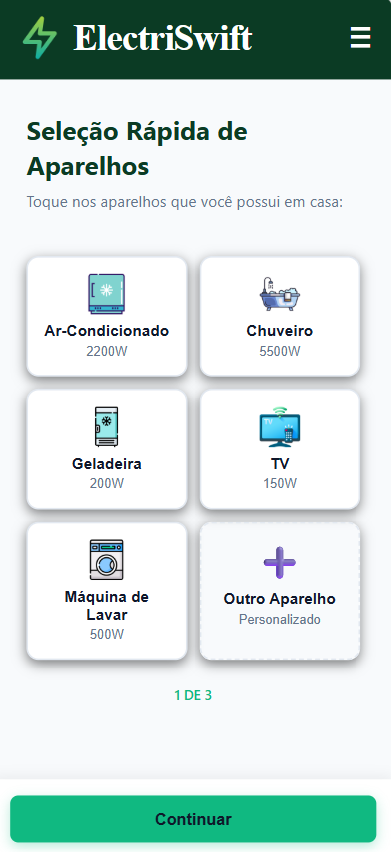
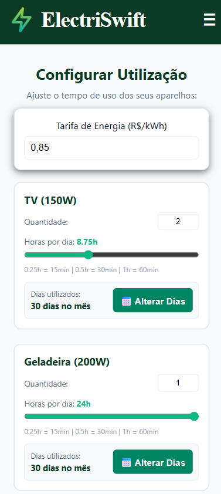
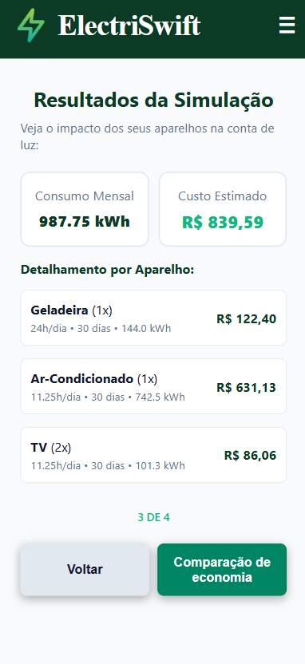
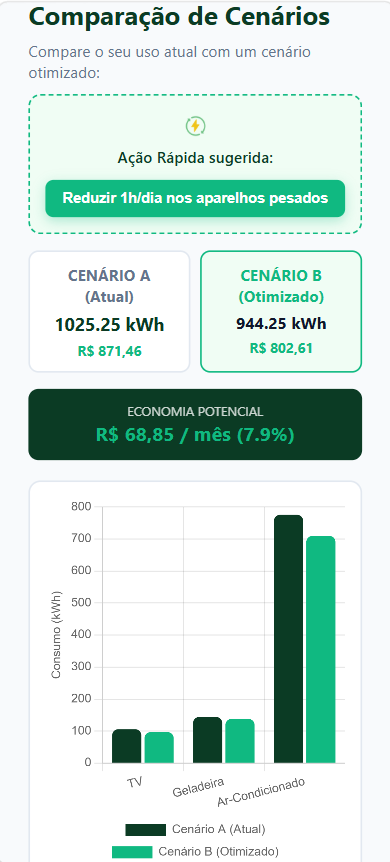

Como Funciona o ElectriSwift?
Entenda o passo a passo da simulação e a lógica por trás dos cálculos de energia da sua casa.
Introdução ao ElectriSwift
Você escolhe os eletrodomésticos que possui na lista rápida ou cadastra um aparelho personalizado informando o nome e a potência em Watts (W).


Define a quantidade de aparelhos, o tempo diário de uso (com frações de hora) e utiliza o Calendário Interativo para marcar os dias do mês. Além disso, informa a tarifa de energia em Reais (R$) por quilowatt-hora (kWh) para calcular o custo estimado.

O sistema processa o consumo mensal total em quilowatt-hora (kWh) e o custo estimado em Reais (R$) com base na tarifa configurada. Diante disso, o usuário analisa os custos de cada aparelho.

Compara o seu consumo atual com um cenário otimizado de economia através de gráficos dinâmicos de barras agrupadas. Diante disso, o usuário visualiza o impacto de cada aparelho no consumo total e no custo da conta de energia. Logo, pode tomar decisões mais conscientes sobre o uso de energia em sua residência.

A Lógica dos Cálculos
O simulador traduz a potência elétrica e o tempo de uso em energia acumulada no mês:
Consumo (kWh) = (W × Horas × Dias × Qtd) ÷ 1000
- Potência (W): Consumo do aparelho por hora.
- Divisão por 1000: Converte Watts para Quilowatts (kW).
- Dias: Dias exatos marcados no calendário (ou padrão de 30).
- Custo (R$): Total de kWh multiplicado pela tarifa local.
Além disso, o custo total é calculado multiplicando o consumo em kWh pela tarifa vigente:
Custo (R$) = Consumo (kWh) × Tarifa (R$/kWh)
Para calcular o cenário otimizado, o sistema aplica uma redução percentual no tempo de uso de cada aparelho, simulando hábitos mais eficientes e econômicos.
Cenário Otimizado = Consumo Atual × (1 - Redução Percentual)
A partir disso, o sistema gera gráficos de barras agrupadas para comparar o consumo e o custo de cada aparelho, permitindo ao usuário identificar os maiores consumidores de energia e tomar decisões mais conscientes sobre o uso de energia em sua residência.